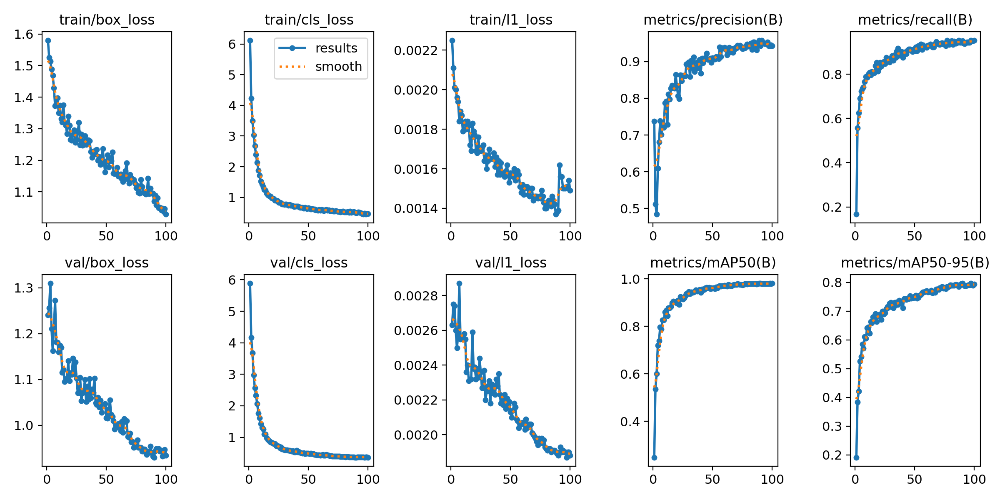
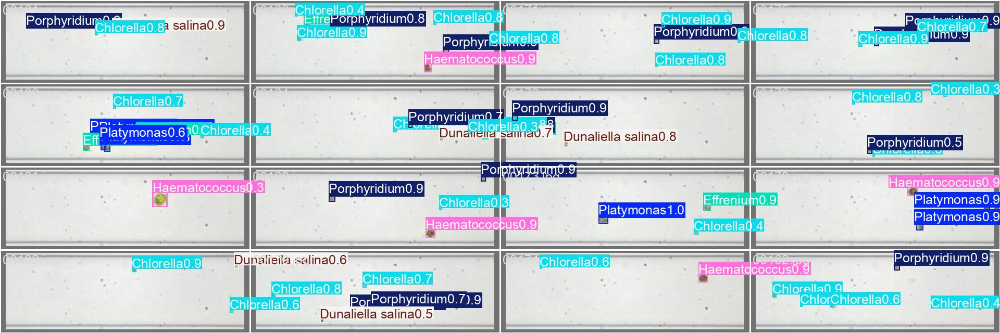
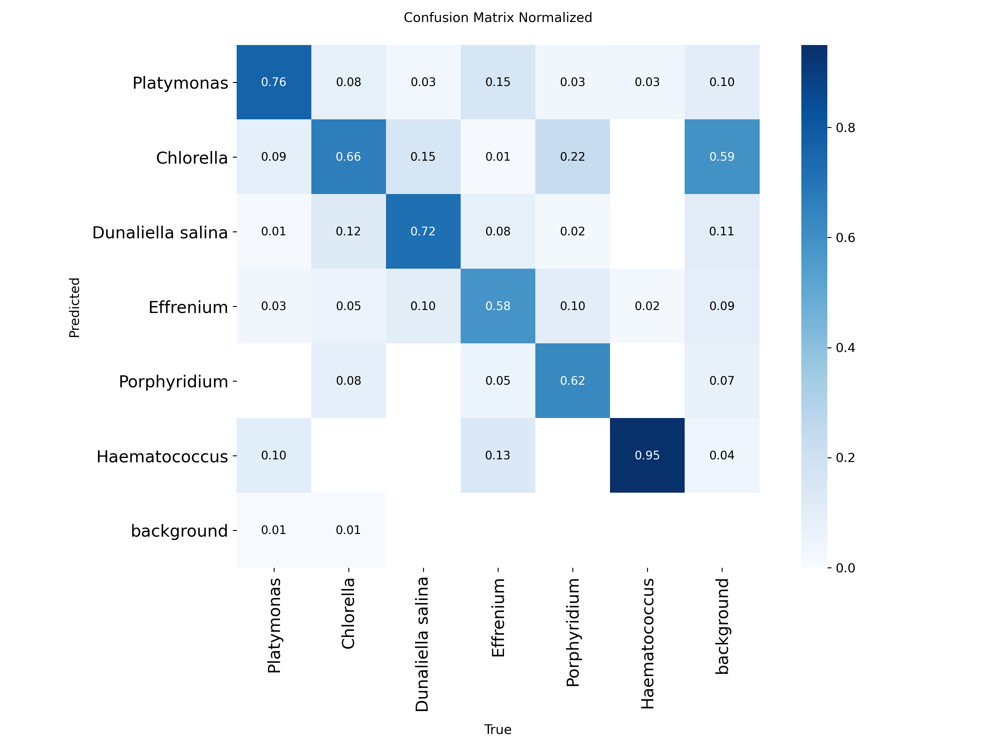

Applying state-of-the-art YOLO (You Only Look Once) deep learning models to automatically detect, identify, and classify microalgae species from microscopic images. This project demonstrates how modern computer vision can accelerate biological research and enable real-time monitoring of microalgae populations.
Utilizing the YOLO (You Only Look Once) family of models for real-time object detection with high accuracy and speed.
Trained on diverse microalgae datasets for multi-class detection and classification of different algae species.
Capable of processing microscopic images and video streams in real-time for live monitoring applications.
Achieving state-of-the-art detection accuracy through careful data augmentation and model optimization techniques.
Watch these video presentations to understand the fundamentals of object detection and how YOLO models are applied to microalgae research.
An overview of object detection in computer vision — understanding the fundamentals of how deep learning models detect and localize objects within images and video streams.
Applying the YOLO deep learning model specifically for microalgae detection and classification.
Visualizations of the YOLO model's training process and prediction accuracy on the microalgae dataset.

Box loss, classification loss, and mAP metrics over training epochs, demonstrating stable convergence.

Sample predictions on the validation set, showing successful identification and bounding box regression.

Normalized confusion matrix indicating strong classification performance across all target classes.
Python Interface Demo
(Video link will be updated soon)
A demonstration of the custom Python testing interface, showing real-time inference, results visualization, and user interaction.
Feel free to reach out for collaboration opportunities or questions about this project.